دليل منصة تابعني — للمدارس
من تأسيس المدرسة والحسابات… إلى التحضير والمخالفات والمناوبة… ثم التقارير الرسمية المطبوعة بباركود التحقق.
نظرة عامة والأدوار العشرة
ما هي منصة تابعني، ومن يستخدمها، وما الذي يستطيعه كل دور.
ما هي المنصة
منصة تابعني للخدمات التعليمية هي نظام تشغيل مدرسي متعدد الأدوار، يبدأ من تسجيل المدرسة وتأسيسها، ويمتد إلى الحسابات، وإسناد المواد، وجدول الحصص، والتحضير اليومي، والمخالفات السلوكية، والاستئذان وتصاريح الخروج، والمناوبة، وساعات التطوع، والنشاط الطلابي، وينتهي بتقارير رسمية مطبوعة بترويسة المدرسة وباركود تحقّق. كل شيء يعمل داخل المتصفح بلا خادم ولا تثبيت.
التسلسل الإداري محفوظ
مشرف المنصة ← مدير المدرسة ← وكيل شؤون الطلاب ← المعلم/التوجيه.
كل إجراء يُنتج أثرًا
تقريرًا برقم، أو رسالة، أو قيدًا في سجل — لا عمل بلا أثر.
الصلاحية من الدور
كل وحدة تظهر لمن يملكها فقط، فلا تداخل بين الخدمات.
تقارير قابلة للتحقق
رقم فريد + باركود + تاريخ ووقت الطباعة على كل تقرير.
الأدوار العشرة
| الدور | المعرّف | ما يستطيع |
|---|---|---|
| مشرف المنصة | super | إنشاء المناطق والمدن (قوائم انزلاقية)، تأسيس المدارس، إنشاء حساب مدير المدرسة، تبديل جنس المدرسة. |
| مدير المدرسة | principal | إنشاء كل حسابات المدرسة، اعتماد طلبات التسجيل، استيراد المعلمين من نور، إسناد المواد بحسب المرحلة، متابعة كل التقارير. |
| وكيل شؤون الطلاب | deputy | الفصول والطلاب (استيراد وإسكان ونقل)، إسناد الفصول والمواد، جدول الحصص وقاعدة الإغلاق، استلام تقارير التحضير، تنفيذ لائحة المخالفات، منح الاستئذان، نسب الحرمان. |
| موجّه التوجيه والإرشاد | guidance | الرد على المخالفات السلوكية بالإجراءات المقترحة، وتحويل طلبات الاستئذان إلى الوكيل. |
| معلم | teacher | التحضير لكل حصة، تسجيل المخالفات، الرد على طلبات النشاط، بصمة الوجه، كشوف تقاريره. |
| وكيل شؤون المعلمين | teachers_deputy | أماكن المناوبة، توزيع المناوبين (يدويًا أو آليًا عادلًا)، الفترات الثلاث، التذكير الآلي بتلقرام، لافتة يوم المناوبة. |
| مسؤول ساعات التطوع | volunteer | البرامج التطوعية، اعتماد التسجيلات والساعات، إصدار شهادات الساعات. |
| مسؤول النشاط الطلابي | activity | الأنشطة وطلبات المشاركة وقراراتها. |
| مراقب الغياب | absence_monitor | متابعة غياب الطلاب، قائمة الحرمان، إشعار ولي الأمر، تقرير «غياب اليوم». |
| طالب | student | طلب المشاركة في الأنشطة، التسجيل في التطوع، متابعة استئذاناته، كشف حضوره. |
خط سير العمل في لمحة
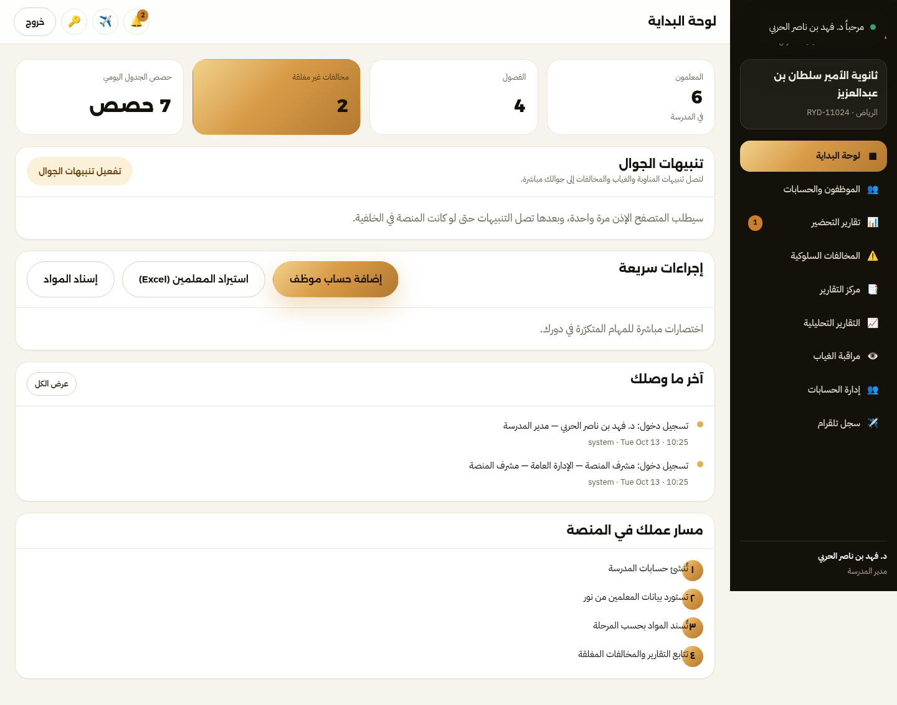
الدخول والتسجيل واستعادة كلمة المرور
من يستخدمها: كل المستخدمين — شاشة الدخول، إنشاء حساب جديد، ورمز الاستعادة.
خطوات الدخول
- افتح المنصةعبر خادم محلي أو GitHub Pages (يفضّل https أو localhost لتعمل الكاميرا في بصمة الوجه).
- أدخل اسم المستخدم أو البريدمثل
principal، وكلمة المرور الموحّدة في النموذج التجريبي:Tabaani@2026. - اضغط «تسجيل الدخول»تُبنى القائمة الجانبية تلقائيًا حسب دورك، ولا تظهر لك إلا وحدات دورك.
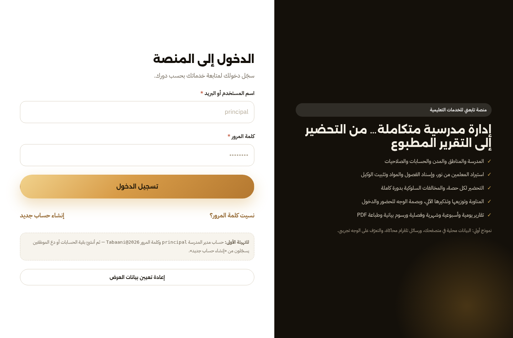
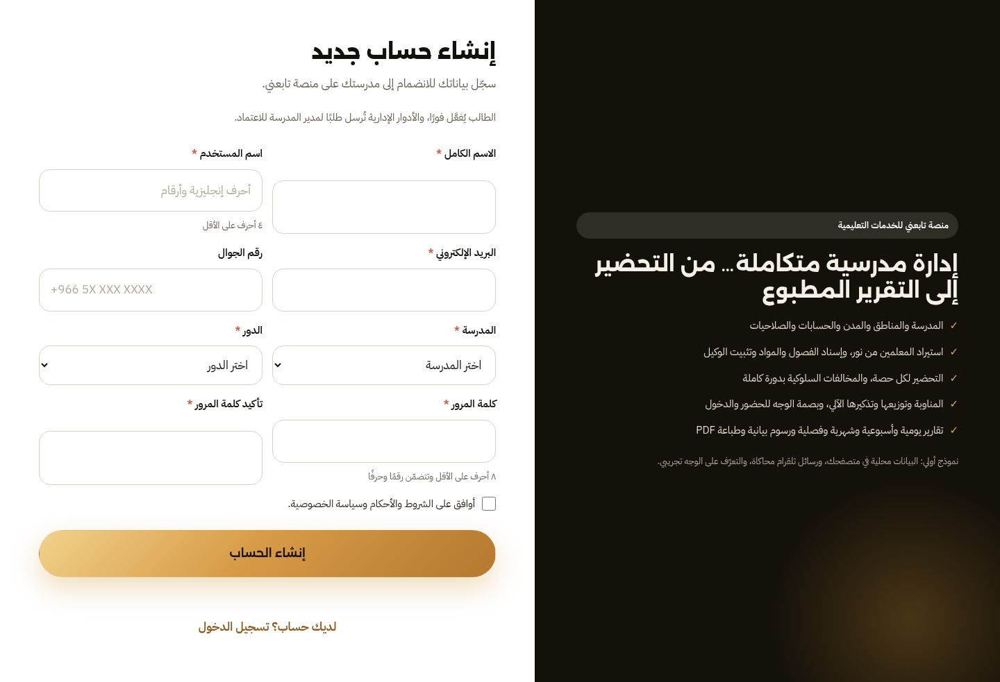
إنشاء حساب جديد
من شاشة الدخول ← «إنشاء حساب جديد». تُحدَّد المدرسة والدور، وتُطبَّق قواعد التحقق على اسم المستخدم (4 أحرف إنجليزية على الأقل) وكلمة المرور (8 أحرف مع رقم وحرف). سلوك الحساب يعتمد على الدور:
| الدور | يحتاج اعتماد المدير؟ | حالة الحساب فور التسجيل |
|---|---|---|
| طالب | لا | نشط مباشرة ويمكنه الدخول فورًا. |
| معلم | نعم | بانتظار اعتماد مدير المدرسة. |
| موجّه التوجيه والإرشاد | نعم | بانتظار اعتماد مدير المدرسة. |
| مراقب الغياب | نعم | بانتظار اعتماد مدير المدرسة. |
استعادة كلمة المرور
- اضغط «نسيت كلمة المرور؟»أدخل اسم المستخدم أو البريد الإلكتروني.
- اختر قناة الإرساليُنشأ رمز تحقّق من ستة أرقام صالح 15 دقيقة، ويُسجَّل في سجل تلقرام (محاكاة).
- أدخل الرمز وكلمة المرور الجديدةثم أكّدها. عند النجاح يُسجَّل التغيير ويصل إشعار للمدير.
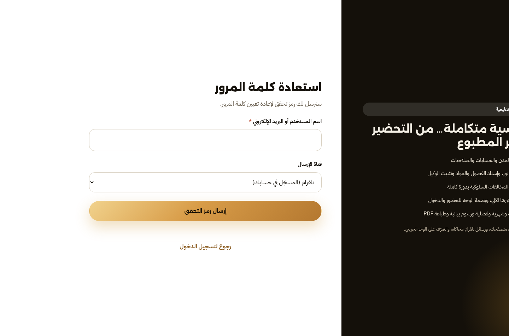
ترويسة التقارير الرسمية
يضبطها مدير المدرسة — الترتيب الرسمي لعناصر الترويسة من الأعلى إلى الأسفل.
ترويسة التقارير هي الوجه الرسمي للمدرسة على كل تقرير مطبوع. تُبنى من بيانات المدرسة المحفوظة في المنصة (الاسم، الشعار، إدارة التعليم) ويُضاف إليها بيانات التقرير (الرقم، التاريخ، وقت الطباعة، الباركود). فيما يلي الترتيب المعتمد بالتفصيل:
- بسم الله الرحمن الرحيم — في المنتصفأعلى الترويسة، خط واضح في منتصف الصفحة.
- المملكة العربية السعوديةثم وزارة التعليم تحتها، في المنتصف أيضًا.
- إدارة التعليم — من قائمة منسدلةتُختار إدارة التعليم التابعة للمدرسة (مثل: إدارة تعليم منطقة الرياض) وتُطبع في المنتصف.
- اسم المدرسةفي المنتصف تحت اسم الإدارة، بخط أوضح بقليل.
- شعار وزارة التعليم وشعار المدرسةشعار وزارة التعليم الرسمي (النقاط الخضراء) في منتصف الصفحة، وشعار المدرسة (إن وُجد) على يسار الصفحة وتحته تاريخ الإصدار والباركود — وكلاهما قابل للاستبدال برفع صورة.
- أسفل شعار المدرسة: تاريخ الإصدار والباركودتاريخ إصدار الترويسة/التقرير، ويقابله باركود التحقق الخاص بالتقرير.
- اسم التقرير بخط كبير في المنتصفتحت الترويسة مباشرة: عنوان التقرير بخط كبير وبارز (مثل «تقرير التحضير اليوم»).
- في نهاية التقرير: معدّ التقرير والتاريخ والوقتاسم من أعدّ التقرير، وتاريخ التقرير ووقت طباعته (هجري + ميلادي)، مع الخطوط المخصّصة للتوقيع.
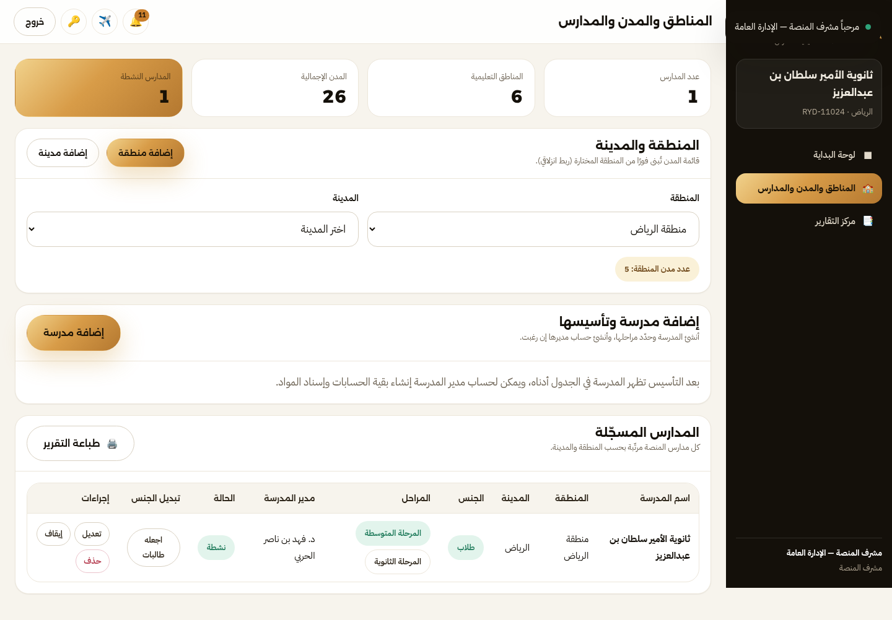
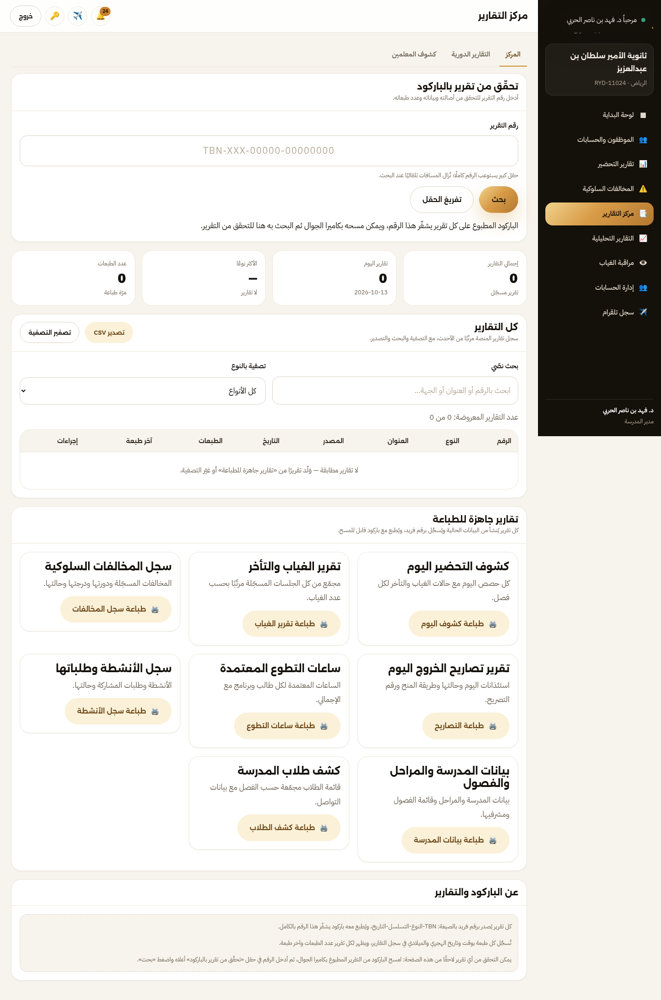
المشرف: المناطق والمدن وتأسيس المدرسة
من يستخدمها: مشرف المنصة super.
المناطق والمدن — قوائم انزلاقية
- افتح «المناطق والمدن والمدارس»من القائمة الجانبية لحساب المشرف.
- اختر المنطقة أو أضفهامثل: منطقة الرياض.
- تُبنى قائمة المدن انزلاقيًاعند اختيار منطقة تظهر مدنها تلقائيًا لتختار منها المدينة.
تأسيس المدرسة
- أدخل اسم المدرسة والرمزمع العنوان، الموقع، الهاتف، البريد.
- حدّد المراحلروضة / ابتدائي / متوسط / ثانوي — والمراحل تحكم المواد المتاحة لاحقًا.
- اختر جنس المدرسةطلاب (بنين) أو طالبات (بنات) — ويُشتق من الاختيار كل المسمّيات والنصوص.
- أنشئ حساب مدير المدرسةيُنشأ مع المدرسة أو بعدها، ثم تبدأ المدرسة عملها من حسابها.
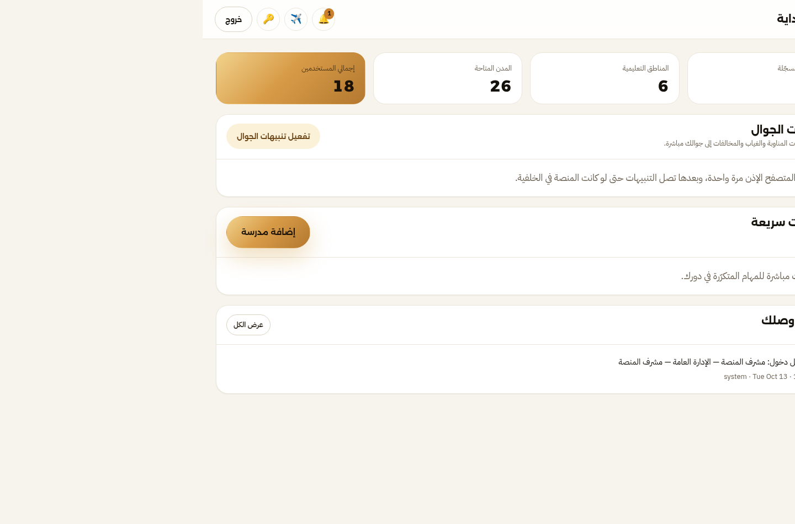
المدير: الحسابات واستيراد نور وإسناد المواد
من يستخدمها: مدير المدرسة principal.
أ) إنشاء الحسابات
- افتح «الموظفون والحسابات»وأنشئ حسابات الوكيل والتوجيه والمعلمين ومسؤولي الخدمات.
- أنشئ كل حساب بدورهوعند اختيار دور المعلم يمكن تحديد فصوله ومواده بقوائم متسلسلة (المرحلة ← الصف ← الشعبة).
- لا تظهر إلا مواد مراحل المدرسةفلا يمكن إسناد مادة من مرحلة لا تشملها المدرسة.
ب) اعتماد طلبات التسجيل
- يسجّل الموظف نفسهمن «إنشاء حساب جديد» فيصل طلبه بحالة «بانتظار الاعتماد».
- يظهر الطلب للمديرفي «إدارة الحسابات ← طلبات الاعتماد» بعدّاد يبيّن عدد الطلبات.
- اضغط «اعتماد» أو «رفض»الاعتماد يجعل الحساب نشطًا ويستطيع الدخول، ويصله إشعار/رسالة.
ج) استيراد المعلمين من نور (Excel/CSV)
- ارفع ملف نورملف Excel أو CSV مستخرجًا من نظام نور.
- طابِق الأعمدةالاسم · المادة · رقم الهوية · الجوال · البريد — والمواد تُستخرج من عمود المادة (تفصلها
,أو،أو/). - راجع نتيجة الاستيرادمضاف / متخطّى (مكرر) / خطأ — والمنع من التكرار برقم الهوية أو البريد.
د) إسناد المواد بحسب المرحلة
بعد الاستيراد تجري عملية الإسناد على تبويب لكل مرحلة من مراحل المدرسة، فتُختار مواد المعلم من مواد مرحلته فقط. ثم يبدأ وكيل شؤون الطلاب إسناد الفصول والمواد وتثبيتها (الفصل 7).
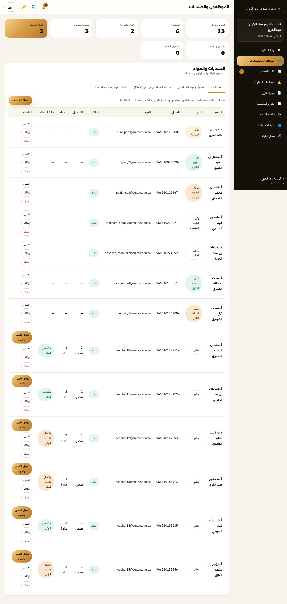
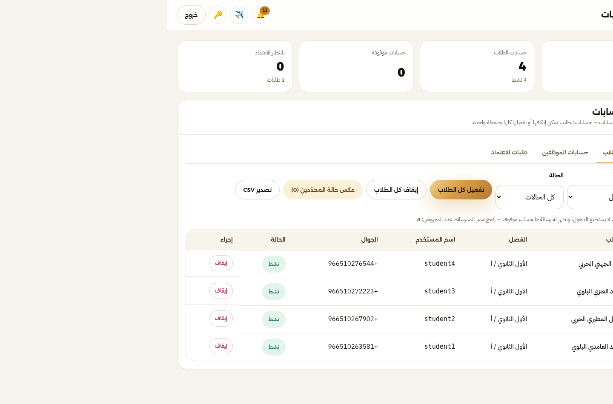
وكيل شؤون الطلاب
من يستخدمها: deputy — الفصول والطلاب، الإسناد، الجدول، التحضير، المخالفات، الاستئذان، والإعدادات.
أ) الفصول والطلاب
- أنشئ الفصولمرحلة ← صف ← شعبة ← غرفة ← مشرف — وعدد طلاب الفصل يُحدَّث تلقائيًا.
- استورد الطلابملف
.xlsx/.xls/.csvبأعمدة: اسم الطالب، رقم الهوية، جوال ولي الأمر، المرحلة، الصف، الفصل. - الإسكان في الفصولإما فصل مستهدف واحد، أو قراءة الصف والشعبة من الملف تلقائيًا — وما لا يُطابق فصلاً قائمًا يُدرج في «غير مسكّنين».
- أسكن غير المسكّنينتحديد فردي أو جماعي ثم «إسكان في فصل».
- انقل الطلاب (من الوكيل فقط)فردي أو جماعي بسبب إلزامي، ويُقيَّد كل نقل في «سجل النقل» بالتاريخ والمنفّذ.
ب) إسناد الفصول والمواد للمعلمين
- افتح «إسناد الفصول والمواد»واختر المعلم من القائمة.
- حدّد فصوله وموادهبقوائم متسلسلة، والحصص الأسبوعية لكل إسناد.
- ثبّت الإسنادلتظهر للمعلم فصوله فقط في التحضير (الفصل 7).
ج) جدول الحصص وقاعدة الإغلاق
- اضبط الحصصرقم الحصة ووقت البداية والنهاية لكل حصة.
- حدّد قاعدة الإغلاق«منتصف الحصة» أو «نهاية الحصة» — وهي التي تحكم متى يُسمح للمعلم بإغلاق التحضير.
- ارفع الجدول (اختياري)من ملف Excel/CSV أو PDF لإسناد الحصص تلقائيًا.
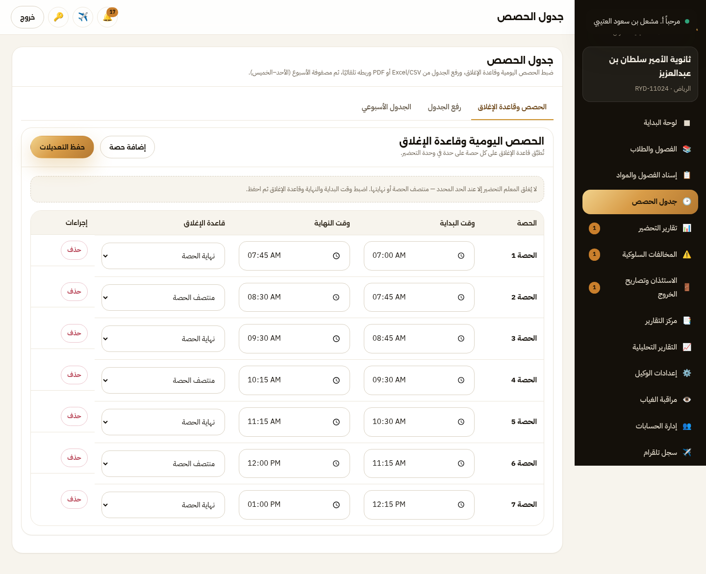
د) تقارير التحضير
تصلك تقارير كل جلسة تحضير يغلقها المعلم: عدد الحاضرين والمتأخرين والغائبين، ويُرسل تقرير فوري لوكيل شؤون الطلاب ومدير المدرسة، مع رسالة تلقرام بالغائبين والمتأخرين. ويمكن طباعة الكشوف بالباركود.
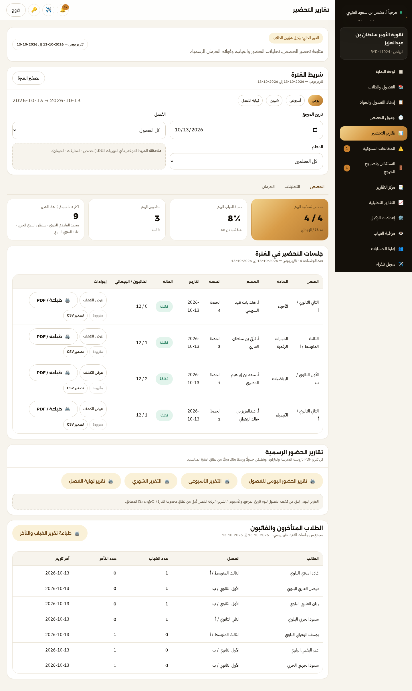
هـ) المخالفات السلوكية
- يسجّل المعلم المخالفةداخل الحصة، مع النوع والوصف.
- يرد التوجيه والإرشادبالإجراء المقترح والخيارات الممكنة.
- تنفّذ الوكيل اللائحةخصم درجات سلوك (يُكتب الرقم أمام المخالفة) أو إجراء آخر + ملاحظة.
- تُغلق القضيةفتُصدر رسالة تلقرام للمعلم والتوجيه والمدير + تقرير مفصّل + أرشفة.
و) الاستئذان وتصريح الخروج
- يُنشئ التوجيه الطلبالطالب، الحصة/المادة، التاريخ، السبب — ويُحوَّل للوكيل.
- يمنحه الوكيلمن المنصة أو الجوال أو تلقرام.
- يُصدر تصريح خروج بباركوديتضمن اسم الطالب، الصف والفصل، الحصة، وقت الخروج، والتاريخ (هجري + ميلادي)، ورقم طلب الاستئذان.
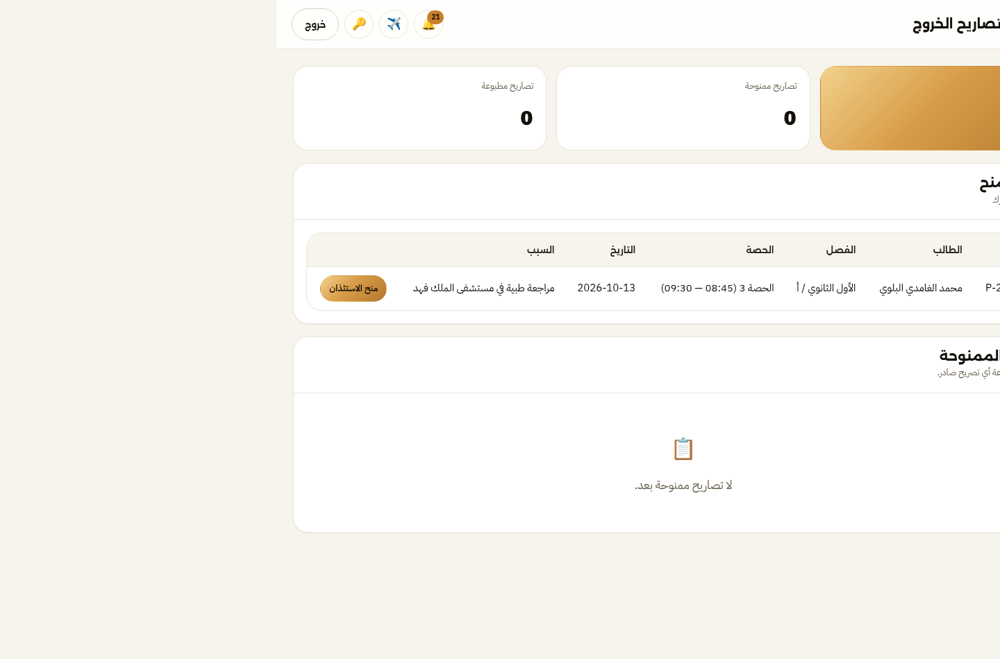
ز) الإعدادات ونسب الحرمان لكل مادة
- افتح «إعدادات الوكيل ← نسب الحرمان»جدول كل مواد مراحل المدرسة، ولكل مادة نسبة.
- عدّل النسبةأدخل النسبة لكل مادة، أو اضبط «النسبة الافتراضية» للمواد غير المحدّدة (الافتراضي 25%).
- راجع «معاينة الأثر»لتظهر فورًا قائمة الطلاب المتجاوزين للحد بحسب الفترة (يومي/أسبوعي/شهري/نهاية الفصل).
- اطبع سياسة الحرمانتقريرًا بترويسة المدرسة وباركود وجدول المواد ونسبها.
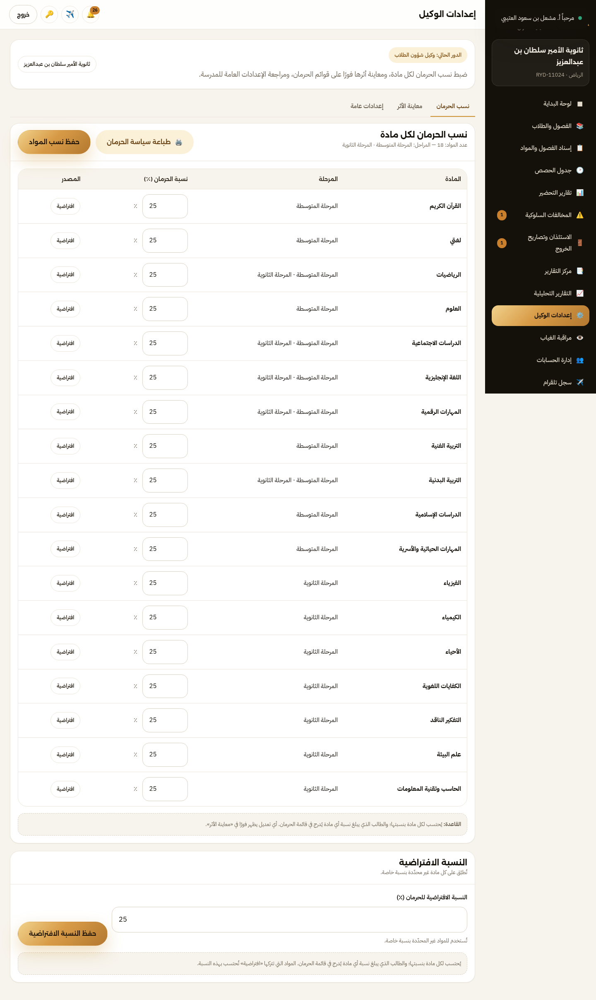
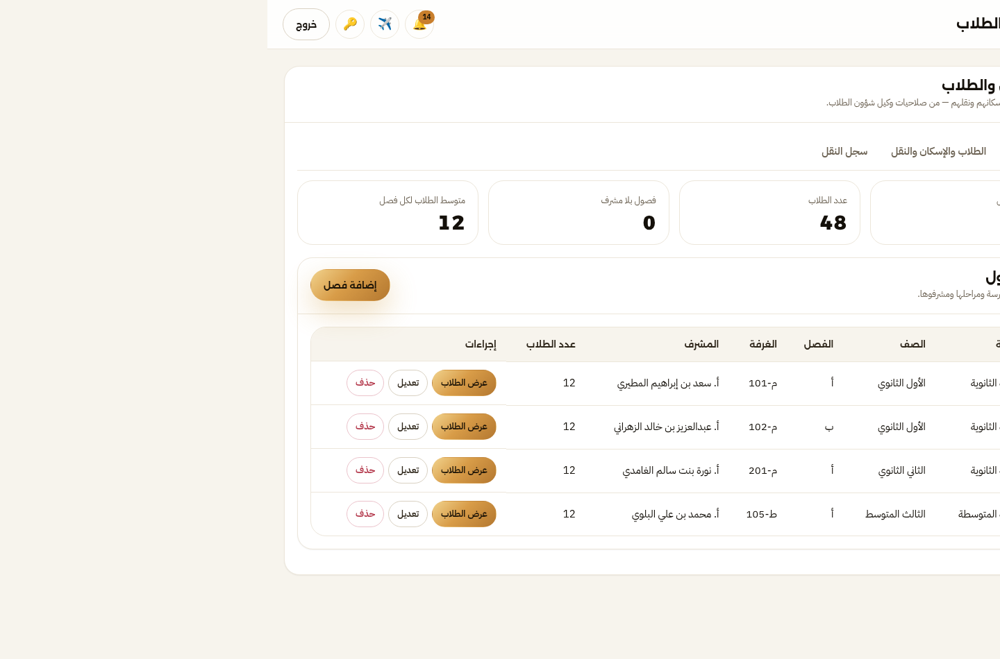
تثبيت الوكيل للإسناد
من يستخدمها: وكيل شؤون الطلاب deputy — فلا يرى المعلم إلا فصوله.
بعد أن يسند الوكيل الفصول والمواد للمعلم، يأتي دور التثبيت: يثبّت الوكيل الإسناد فيصبح المعلم مرتبطًا بفصوله ومواده المحدّدة، ولا يرى في التحضير وبصمة الوجه وكشوف تقاريره إلا فصوله. قبل التثبيت يرى المعلم كل إسناداته المرحلية؛ وبعده لا تتغيّر قائمته إلا بتثبيت جديد من الوكيل.
- افتح «إسناد الفصول والمواد»تبويب إسنادات المعلمين.
- راجع فصول المعلم وموادهوتأكّد من مطابقتها للجدول الفعلي.
- اضغط «تثبيت»فيُقيَّد التاريخ ومَن ثبّت، ويظهر للمعلم ما يخصّه فقط.
- راجع «فصول ومواد المعلمين»لوحة عرض وتتبّع لِما ثُبّت وما لم يُثبّت بعد.
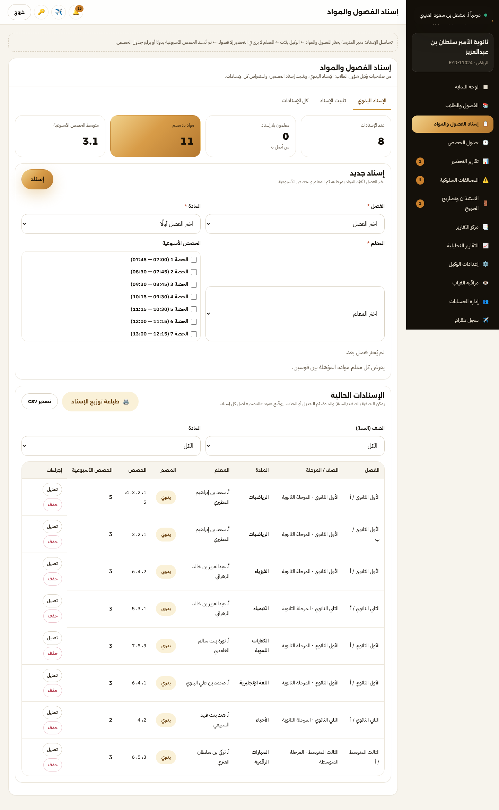
المعلم
من يستخدمها: teacher — التحضير، المخالفة، النشاط، بصمة الوجه، وكشوف تقاريري.
أ) التحضير لكل حصة
- اختر الفصل والمادة والحصة والتاريخفيُفتح كشف الطلاب.
- اضبط حالة كل طالبحاضر · متأخر · غائب · بعذر — وتُحفظ لحظيًا.
- أغلق الكشفولا يُغلق قبل منتصف الحصة أو نهايتها بحسب قاعدة الإغلاق التي ضبطها الوكيل.
- يُرسل التقرير تلقائيًاللوكيل والمدير + رسالة تلقرام بالغائبين والمتأخرين.
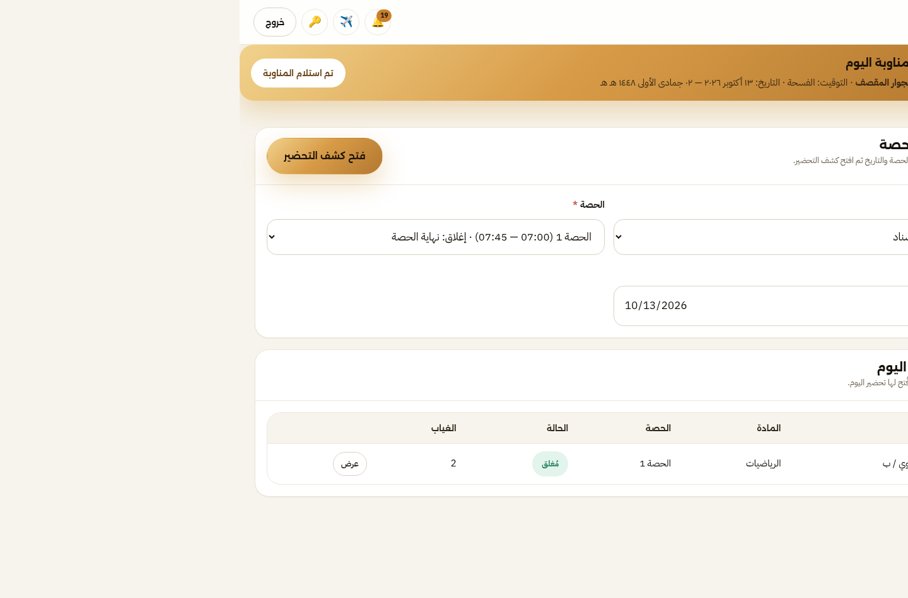
ب) تسجيل المخالفة وطلب النشاط
- سجّل المخالفةنوع المخالفة والوصف، فيصل الإشعار للتوجيه والوكيل.
- اطلب النشاطالطالب يطلب المشاركة مع المدة خارج الصف والسبب؛ والقرار لك: قبول أو اعتذار مع سبب.
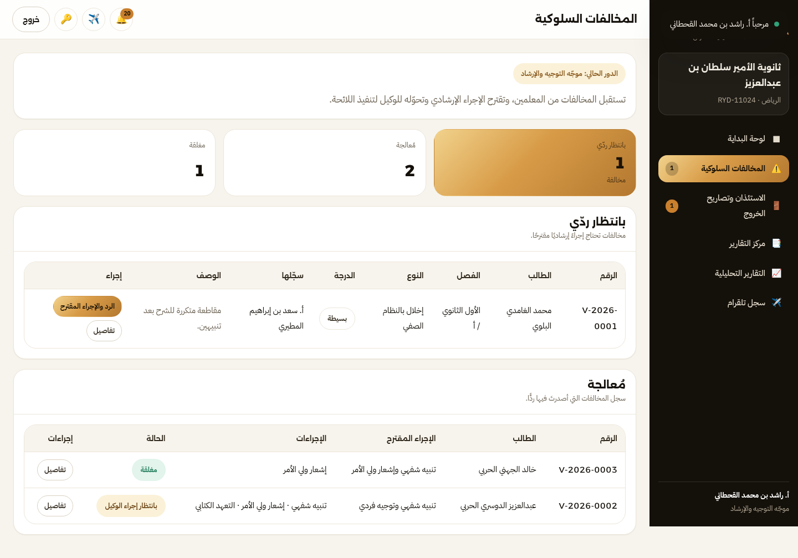
ج) بصمة الوجه
ثلاث خطوات مترابطة: تسجيل البصمة مرة واحدة، ثم طلب تمرير الوجه عند الدخول، ثم تسجيل حضور الحصة بالوجه. التعرّف يجري محليًا على الجهاز ولا تُخزَّن صورة، بل وصف رقمي فقط.
- سجّل بصمة وجهكمن «بصمة الوجه ← تسجيل بصمة وجهي» بعد السماح بالكاميرا.
- طلب تمرير الوجه عند الدخوليُطلب منك تمرير وجهك للتحقق قبل الدخول بعد التفعيل.
- سجّل حضور الحصة بالوجهاختر الفصل والحصة ثم مرّر وجهك لتُسجَّل الحضور.
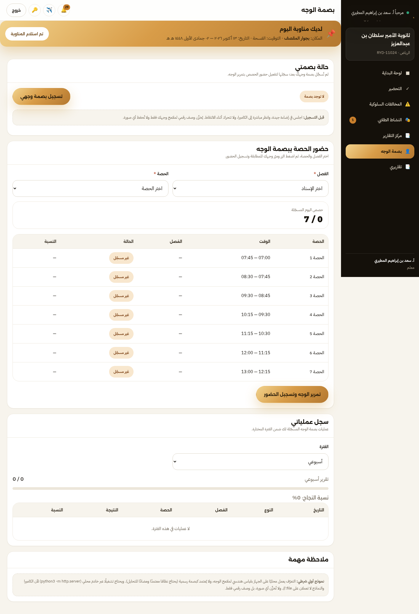
https أو localhost فقط؛ لذا شغّل المنصة عبر خادم محلي أو GitHub Pages.د) كشوف تقاريري
من «تقاريري»: كشف حضورك وانصرافك، وإحصاء الطلاب الأكثر غيابًا وتأخرًا وحضورًا، وقائمة من بلغ نسبة الحرمان، مع كشف رسمي بترويسة المدرسة وباركود.
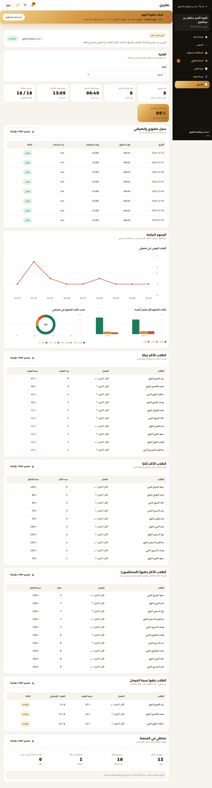
التوجيه والإرشاد
من يستخدمها: guidance — الرد على المخالفات وتحويل الاستئذان.
- تصلك المخالفات الجديدةمن المعلم، بحالة «بانتظار التوجيه»، مع عدّاد على الوحدة.
- ردّ بالإجراءحدّد الإجراء المقترح والإجراءات الممكنة (واحدة أو أكثر: تنبيه، إشعار ولي الأمر، تعهد، إحالة لمجلس التوجيه…).
- حوّل المخالفة للوكيللتنتقل إلى «بانتظار الوكيل» لتنفيذ اللائحة وإغلاق القضية.
- أنشئ طلب الاستئذانللطالب ثم حوّله لوكيل شؤون الطلاب لمنح الإذن.
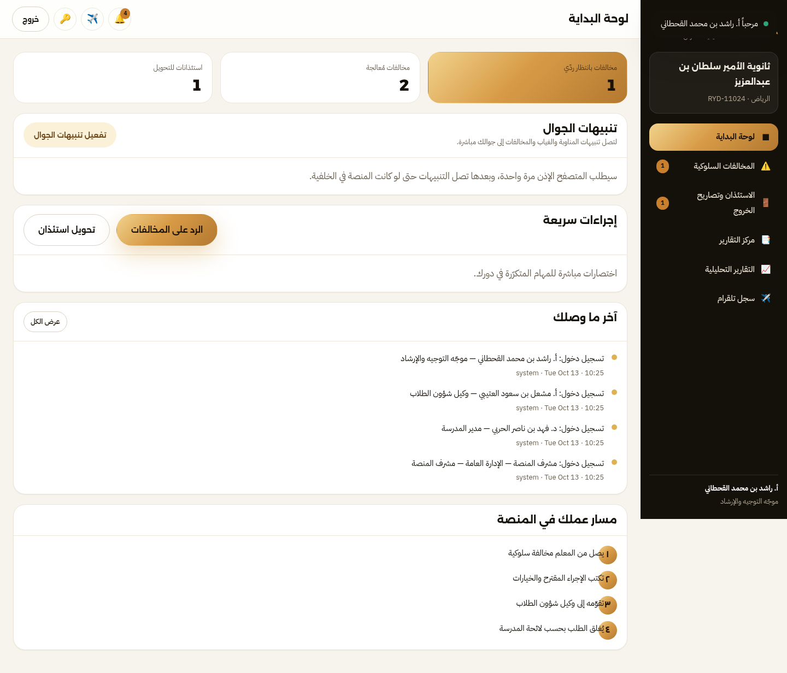
وكيل شؤون المعلمين: المناوبة
من يستخدمها: teachers_deputy — الأماكن، التوزيع، الفترات الثلاث، التذكير، واللافتة.
أ) أماكن المناوبة
عرّف الأماكن التي تُغطّى بالمناوبة: بجوار المقصف، ساحة المقصف، الدور الأول، الجهة الجنوبية، البوابة…
ب) التوزيع الآلي العادل
- حدّد نطاقًا تاريخيًامن تاريخ إلى تاريخ.
- حدّد عدد المناوبين في اليوم والأماكنواستثنِ من تشاء من المعلمين، مع خيار تضمين نهاية الأسبوع (مستثناة افتراضيًا).
- وزّع آليًايوزّع النظام بالعدالة (الأقل مناوبات أولًا) بلا تكرار لنفس المعلم في اليوم نفسه.
- أو أضف يدويًايوم/معلم/مكان/توقيت، ثم غيّر أو احذف أو سجّل الاستلام.
ج) الفترات الثلاث
د) التذكير الآلي ولافتة المناوبة
- تذكير تلقرام قبل المناوبة بيوميُرسل للمعلم من اليوم الذي يسبق مناوبته باسم المكان والتوقيت، ويُقيَّد الإرسال فلا يتكرّر لنفس المناوبة.
- لافتة يوم المناوبةفي يوم مناوبته تظهر لافتة فور دخوله حسابه فيها المكان والتوقيت، مع زر «تم استلام المناوبة».
- طباعة الجدول أو تصديرهجدول أسبوعي للمناوبين (TBN-DUT) أو تصدير CSV.
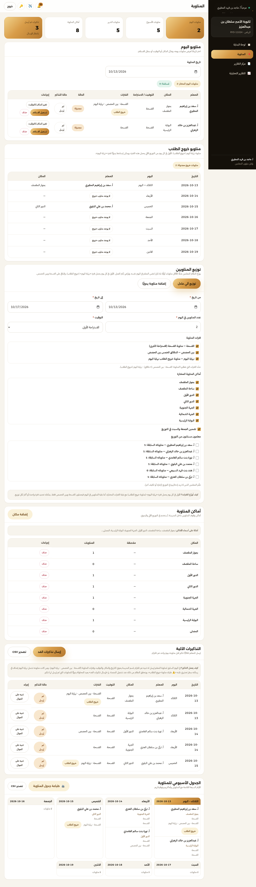
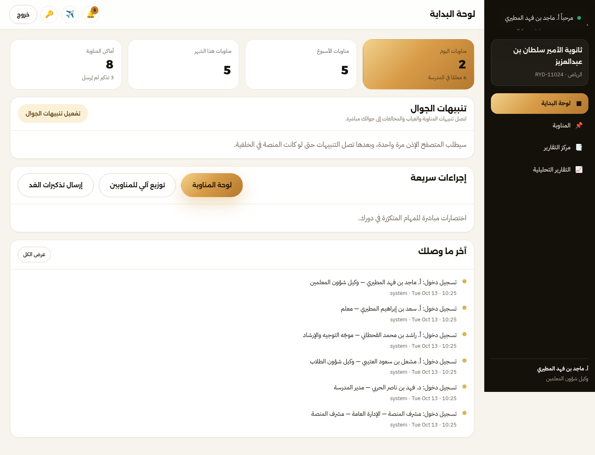
ساعات التطوع والنشاط الطلابي ومراقبة الغياب
من يستخدمها: volunteer · activity · absence_monitor.
أ) ساعات التطوع
- أنشئ البرنامجالعنوان، الساعات المعتمدة، عدد المقاعد، المدة.
- يسجّل الطلاب من المنصةوتظهر التسجيلات بحالة «بانتظار الاعتماد».
- اعتمد التسجيلات والساعاتثم أصدر شهادة ساعات تطوعية بباركود لكل طالب.
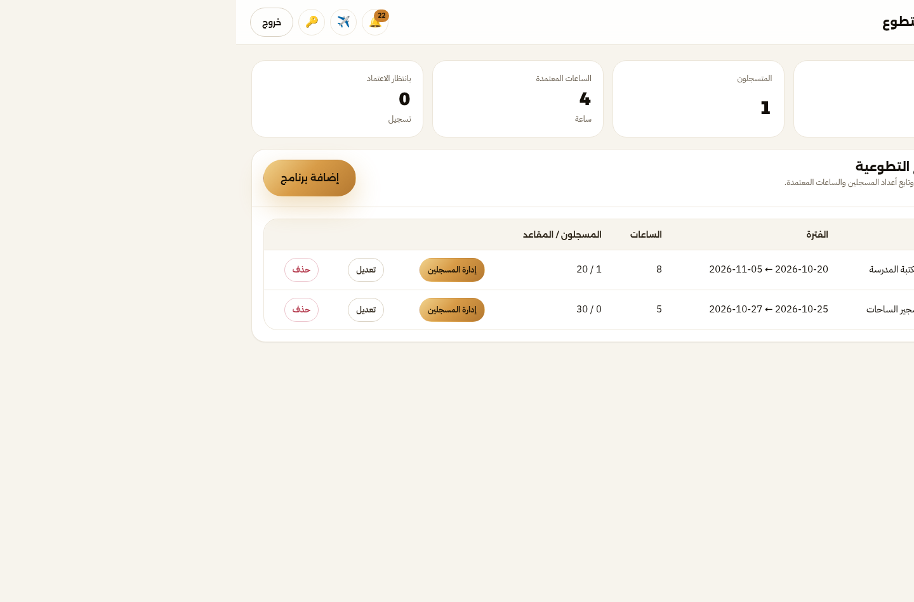
ب) النشاط الطلابي
- أنشئ النشاطوحدّد تفاصيله وموعده.
- يطلب الطالب المشاركةمع المدة التي سيجلس فيها خارج الصف والسبب.
- يقرّر معلم المادةقبول أو اعتذار مع سبب (درس مهم / اختبار / سبب آخر + ملاحظة).
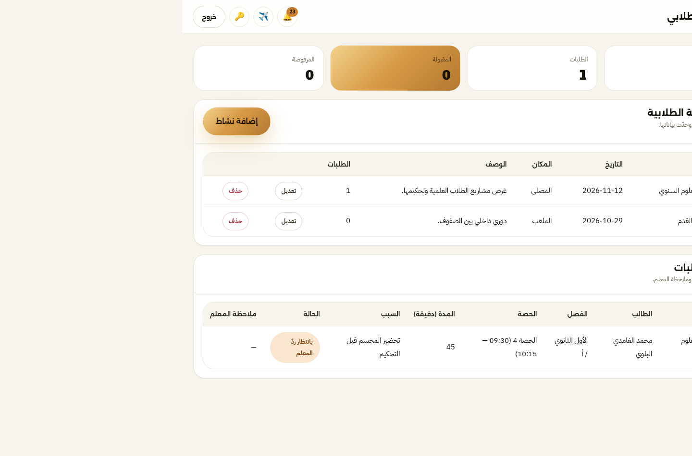
ج) مراقبة الغياب
- تابع غياب اليوموقوائم الطلاب الأكثر غيابًا وتأخرًا.
- راجع قائمة الحرمانلمن بلغ نسبة الحرمان بحسب نسب المواد.
- أشعر ولي الأمرباختيار قناة الإبلاغ وتحرير نص الرسالة، ثم يُسجَّل الإشعار.
- اطبع تقرير غياب اليومبترويسة المدرسة وباركود TBN-MON، أو صدّر CSV.
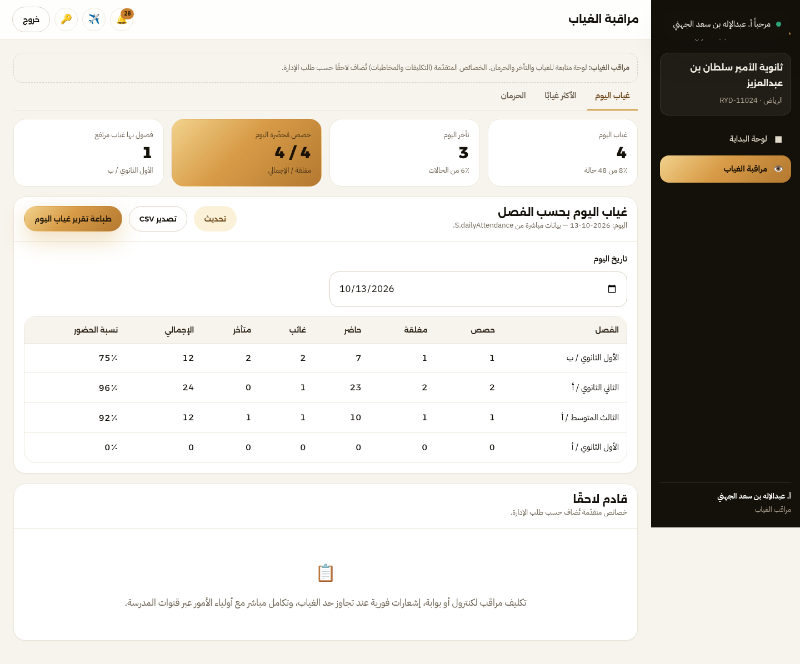
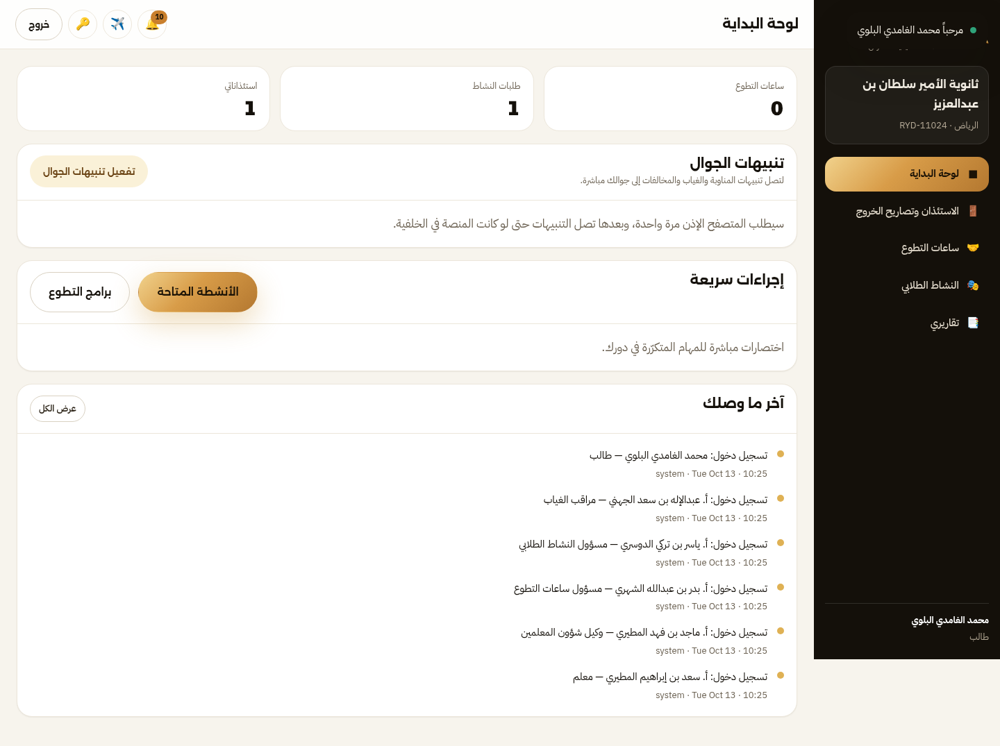
مركز التقارير والتحليلات
من يستخدمها: كل الأدوار الإدارية — يومي · أسبوعي · شهري · نهاية فصل.
أ) التقارير الجاهزة
يشمل مركز التقارير: التحضير، الغياب والتأخر، المخالفات، تصاريح الخروج، ساعات التطوع، الأنشطة،
بيانات المدرسة، كشوف الطلاب، وكشوف المعلمين. وكل تقرير يُنشأ من البيانات الحالية ويُسجَّل برقم فريد
بالصيغة TBN-النوع-التسلسل-التاريخ ويُطبع مع باركود.
ب) التقارير الدورية (يومي · أسبوعي · شهري · نهاية فصل)
- حدّد التقويم الدراسيمدير المدرسة يضبط بداية ونهاية كل فصل ويعيّن الفصل الحالي.
- اختر الفترةيومي / أسبوعي / شهري / نهاية الفصل، فيُبنى النطاق تلقائيًا.
- عاين واطبعكل تقرير يُطبع PDF بترويسة المدرسة وباركود تحقّق.
ج) التحليلات والرسوم البيانية
التحليلات تعرض الأكثر غيابًا وتأخرًا وحضورًا، ونسب الحرمان لكل مادة، وتفعيل المعلمين للمنصة، مع رسوم بيانية (أعمدة مفردة ومجمّعة، خطوط، ودوائر نسب) تُبنى بلا مكتبات وتُطبع داخل التقرير.
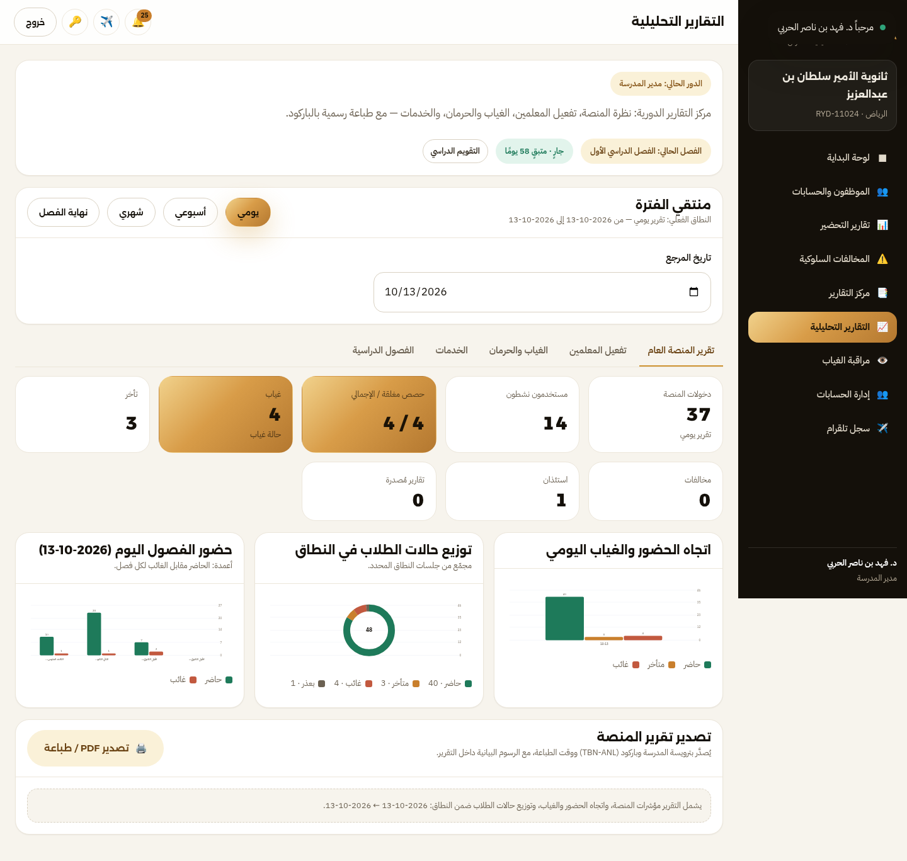
د) التحقق بالباركود
- امسح الباركودمن التقرير المطبوع بكاميرا الجوال لقراءة رقم التقرير.
- أدخل الرقم في «تحقّق من تقرير بالباركود»ثم اضغط «بحث».
- راجع بيانات التقريرمن أصدره، وقت طباعته، وعدد الطبعات — فإن كانت النسخة سليمة ظهرت بياناتها.
تلقرام: إنشاء التوكن خطوة بخطوة
من يستخدمها: مدير المدرسة أو وكيل شؤون الطلاب — لتفعيل الإرسال الحقيقي.
في النموذج الحالي تُسجَّل الرسائل في «سجل تلقرام» (محاكاة). ولتفعيل الإرسال الحقيقي عبر بوت تلقرام، اتبع الخطوات التالية بالتفصيل:
- افتح تلقرام وابحث عن BotFatherالحساب الرسمي
@BotFather، ثم أرسل الأمر/newbot. - أدخل اسمًا للبوتثم اسم مستخدم ينتهي بـ
botمثلtabaani_school_bot. - انسخ التوكن (Token)سيردّ BotFather برسالة فيها التوكن بالشكل
123456789:AAE...— انسخه وضعه في الخادم (متغيّر بيئة) ولا تضعه في الواجهة. - شغّل المستخدمون محادثة البوتعلى كل مستخدم يريد استقبال الرسائل أن يفتح محادثة البوت ويضغط Start ثم يرسل
/start. - احصل على معرّف المحادثة (chat id)افتح رابط
getUpdatesواقرأ قيمةresult[].message.chat.id— أو أرسل رسالة للبوت ثم حدّث الصفحة. - اختبر الإرسالافتح رابط
sendMessageالجاهز — إن وصلتك الرسالة فالإعداد صحيح. - أدخل الـ chat id في المنصةفي «سجل تلقرام ← ربط حسابات تلقرام»، ضع معرّف المحادثة أمام كل مستخدم واحفظ.
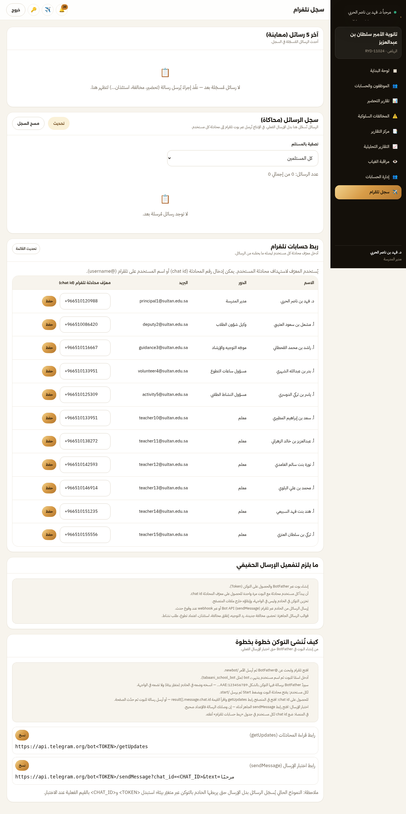
إدارة الحسابات
من يستخدمها: مدير المدرسة ووكيل شؤون الطلاب principal · deputy.
إيقاف/تفعيل حسابات الطلاب كلهم بضغطة
- افتح «إدارة الحسابات ← حسابات الطلاب»تظهر البطاقات: إجمالي الحسابات، حسابات الطلاب، الموقوفة، وبانتظار الاعتماد.
- اختر النطاقكل الفصول، أو فصلًا محدّدًا من القائمة — وأيضًا تصفية بالحالة (نشط/موقوف/بانتظار الاعتماد).
- اضغط «إيقاف كل الطلاب» أو «تفعيل كل الطلاب»فيُؤكَّد الطلب ثم تُطبَّق الحالة على الجميع بضغطة واحدة، مع رسالة بعدد الحسابات التي تغيّرت.
- أو عالج فرديًاحدّد صفوفًا ثم «عكس حالة المحدّدين»، أو استخدم زر إيقاف/تفعيل في كل صف.
حسابات الموظفين
من تبويب «حسابات الموظفين» يمكن إيقاف أي حساب أو تفعيله (المدير، الوكلاء، التوجيه، المعلمون، ومسؤولو الخدمات). والحساب الموقوف لا يستطيع الدخول، وتظهر له رسالة «الحساب موقوف — راجع مدير المدرسة». ويمكن تصدير حسابات الطلاب إلى ملف CSV.
إدارة المستخدمين وكلمات مرور التسليم (المشرف العام)
من «إدارة المستخدمين» يستطيع المشرف العام إضافة مستخدم وتعطيل/تفعيل الحسابات وتغيير الدور وإعادة تعيين كلمة المرور، مع عدّادات (الإجمالي · الموظفون · الطلاب · بانتظار الاعتماد · غير النشط) وتصفية بالبحث والدور والحالة والنوع والمدرسة.
ولمنع أي تسرّب صلاحيات، اختُبر آليًا دخول كل دور من شاشة الدخول: القائمة الجانبية تعرض وحداته فقط، ومحاولة فتح وحدة ليست من صلاحياته بالرابط تُعيده إلى لوحته.
جنس المدرسة والتأنيث التلقائي
يُحدَّد عند تأسيس المدرسة، ويُشتق منه كل المسمّيات والنصوص.
عند تسجيل المدرسة يُحدَّد جنسها: طلاب (بنين) أو طالبات (بنات)، ومنه تُشتق كل المسمّيات والنصوص في الواجهة والتقارير تلقائيًا (القائمة الجانبية، لوحات التحكم، عناوين الوحدات، ونصوص التقارير). ويمكن للمشرف تبديل الجنس لاحقًا من «المناطق والمدن والمدارس» ← زر «اجعله طالبات/اجعله طلابًا».
| طلاب (بنين) | طالبات (بنات) |
|---|---|
| وكيل شؤون الطلاب | وكيلة شؤون الطالبات |
| معلم | معلمة |
| مدير المدرسة | مديرة المدرسة |
| وكيل شؤون المعلمين | وكيلة شؤون المعلمات |
| موجّه التوجيه والإرشاد | موجّهة التوجيه والإرشاد |
| مسؤول ساعات التطوع | مسؤولة ساعات التطوع |
| مراقب الغياب | مراقبة الغياب |
| الطلاب · المتميزون | الطالبات · المتميزات |
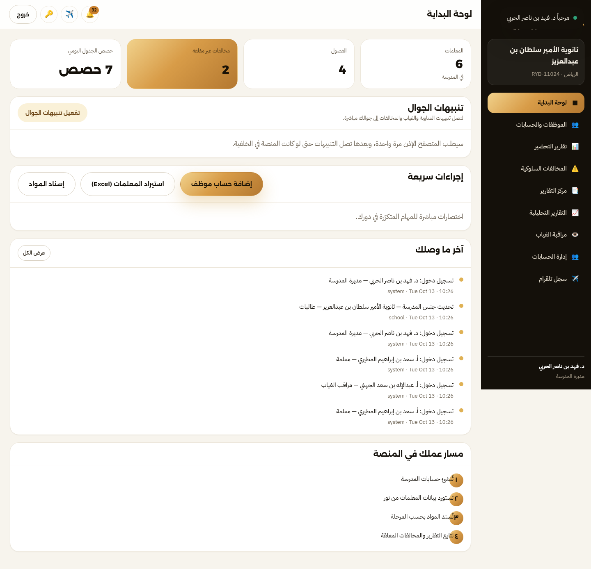
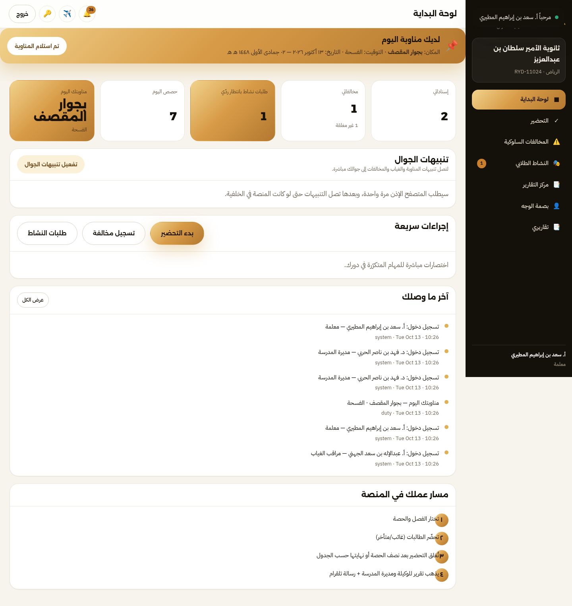
أسئلة متكررة وجهات الدعم
أكثر ما يُسأل عنه، ومن تراجع عند الحاجة، وحدود النموذج الحالي.
أسئلة متكررة
1) هل أحتاج إلى إنترنت أو تثبيت؟
لا. كل شيء يعمل في المتصفح بلا تثبيت. يُفضّل الإنترنت فقط لعمل بصمة الوجه عبر localhost
أو https؛ وباقي المنصة تعمل دون اتصال.
2) لماذا لا يعمل استيراد ملف نور؟
تأكّد من أن الملف .xlsx/.xls/.csv، ومن مطابقة أسماء الأعمدة (الاسم/المادة/الهوية/البريد)، وأن يكون
ملف CSV بترميز UTF-8 حتى لا تتحطّم العناوين العربية.
3) لماذا لا يظهر للمعلم إلا بعض الفصول؟
لأن وكيل شؤون الطلاب ثبّت له هذه الفصول فقط. راجع «إسناد الفصول والمواد ← تثبيت» (الفصل 7).
4) لماذا لا يقبل النظام إغلاق التحضير؟
لأن قاعدة الإغلاق تمنع الإغلاق قبل منتصف الحصة أو نهايتها بحسب ضبط الوكيل. الزر يوضّح الوقت المسموح.
5) كيف أضيف مدرسة أو أغيّر جنسها؟
مدرسة جديدة: من حساب المشرف في «المناطق والمدن والمدارس». تغيير الجنس: الزر «اجعله طالبات/اجعله طلابًا» في الوحدة نفسها.
6) لماذا لم تصل رسالة تلقرام؟
راجع: هل أنشأت التوكن ووضعته في الخادم؟ هل أرسل المستخدم /start للبوت؟ هل أُدخل معرّف
المحادثة في «ربط حسابات تلقرام»؟ (الفصل 13).
7) كيف أوقف حسابات الطلاب كلها؟
«إدارة الحسابات ← حسابات الطلاب» ثم اختر النطاق واضغط «إيقاف كل الطلاب» (الفصل 14).
8) كيف أتحقق من صحة تقرير مطبوع؟
امسح الباركود بكاميرا الجوال، ثم أدخل رقم التقرير في «مركز التقارير ← تحقّق من تقرير بالباركود» واضغط «بحث».
جهات الدعم
| الجهة | الحساب | المسؤولية |
|---|---|---|
| مشرف المنصة | admin | تأسيس المدارس والمناطق والمدن، وحساب مدير المدرسة. |
| مدير المدرسة | principal | الحسابات والاعتمادات واستيراد نور وإسناد المواد وترويسة التقارير. |
| وكيل شؤون الطلاب | deputy | الفصول والطلاب والنقل والإسناد والجدول والتحضير والاستئذان ونسب الحرمان. |
| وكيل شؤون المعلمين | tdeputy | المناوبة وتوزيعها والفترات وتذكيرها. |
| الدعم الفني | — | راجع README.md وdocs/BLUEPRINT.md في جذر المستودع. |
حدود النموذج الحالي (قبل الإنتاج)
| العنصر | الحالة الحالية |
|---|---|
| البيانات | محلية في localStorage — تُستبدل بـ API وقاعدة بيانات (طبقة store.js هي المطلوب استبدالها). |
| المصادقة | اسم مستخدم/كلمة مرور في المتصفح — تحتاج خادمًا وتشفيرًا. |
| تلقرام | الرسائل محاكاة مسجّلة في «سجل تلقرام»؛ الإرسال الحقيقي يحتاج ربط التوكن بالخادم. |
| بصمة الوجه | تعرّف هندسي محلي تجريبي — لا يُعتمد كبصمة رسمية (يحتاج نظامًا معتمدًا ومضادًا للتحايل). |
| طباعة PDF | عبر حوار الطباعة في المتصفح — الإنتاج يستخدم مولّد PDF على الخادم. |
| ملف نور | الاستيراد بقالب أعمدة قياسي — يُضبط على الملف الفعلي لاحقًا. |
ملحق: بيانات الدخول التجريبية ورابط المستودع
كلمة المرور الموحّدة لكل الحسابات التجريبية: Tabaani@2026.
| الدور | اسم المستخدم | ملاحظة |
|---|---|---|
| مشرف المنصة | admin | تأسيس المدارس والمناطق. |
| مدير المدرسة | principal | الحساب الرئيسي للتهيئة الأولى. |
| وكيل شؤون الطلاب | deputy | الفصول والطلاب والإسناد والتحضير. |
| موجّه التوجيه والإرشاد | guidance | المخالفات والاستئذان. |
| وكيل شؤون المعلمين | tdeputy | المناوبة. |
| مسؤول ساعات التطوع | volunteer | البرامج والساعات والشهادات. |
| مسؤول النشاط الطلابي | activity | الأنشطة والطلبات. |
| مراقب الغياب | monitor | متابعة الغياب والحرمان. |
| معلم (6 حسابات) | teacher1 … teacher6 | التحضير والمخالفات والنشاط وبصمة الوجه. |
| طالب (4 حسابات) | student1 … student4 | الأنشطة والتطوع والاستئذان. |
المستودع والتشغيل
منصة المدارس: مجلد app/ — شغّلها عبر خادم محلي ثم افتح http://localhost:8081.
الموقع التعريفي: مجلد site/. معرض الشاشات: screens/index.html.
راجع README.md للتشغيل السريع وبيانات الدخول، وdocs/BLUEPRINT.md للمتطلبات والمعمارية، وdocs/brand-guidelines.md لدليل الهوية البصرية. ولمعرض الشاشات الكامل: screens/index.html.
منصة تابعني للخدمات التعليمية — دليل الاستخدام · الإصدار 1.0 · أكتوبر 2026.
هذا الدليل يصف النموذج الأولي العامل داخل المتصفح. الأرقام لاتينية، والواجهة عربية RTL بطابع الهوية
الذهبية (ذهبي #CE9433 · أونيكس #14100A · كريمي #F7F4ED).